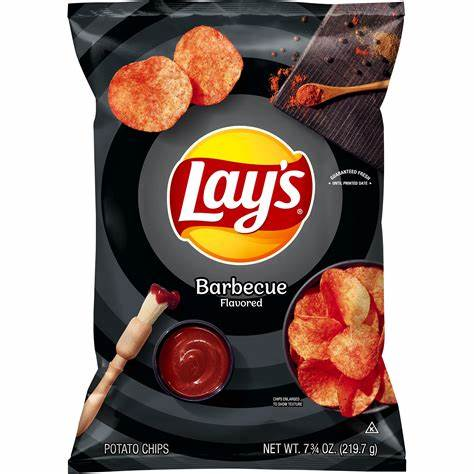

Sour Cream and Onion
BBQ chips, a cherished variety in the world of flavored potato chips, are known for their smoky, savory, and slightly sweet flavor profile. These chips are seasoned with a special blend of spices that typically includes paprika, garlic, onion, and brown sugar, among others, which come together to create a rich, barbecue-inspired taste sensation. Whether you opt for the classic mesquite, hickory-smoked, or a unique regional twist, BBQ chips offer a delightful combination of bold flavors and a satisfying crunch. They're a popular choice for picnics, barbecues, and snack time, bringing a taste of outdoor grilling indoors and providing a deliciously smoky and mouthwatering snacking experience for all to enjoy.
